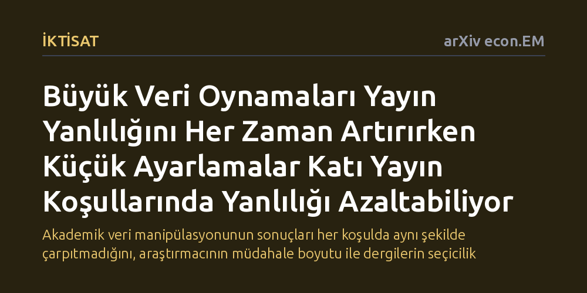

IKTISAT · arXiv econ.EM · 2026-09-08
Araştırma, p-hacking uygulamalarının akademik yayın yanlılığı üzerindeki etkisini teorik bir modelle inceliyor. Büyük p-değeri değişimlerinin yanlılığı her zaman artırdığı, küçük ayarlamaların ise yalnızca katı yayın filtresi altında yanlılığı hafifletebildiği belirlendi.
Akademik veri manipülasyonunun sonuçları her koşulda aynı şekilde çarpıtmadığını, araştırmacının müdahale boyutu ile dergilerin seçicilik düzeyine bağlı olarak yayın yanlılığının yönünün değişebileceğini gösterir.

Bilimsel araştırmalarda yeni bir hipotezi test ederken istatistiksel anlamlılık eşiği çoğu zaman bir dönüm noktası olarak görülür. Akademik dergiler, anlamlı bir etki bulamayan veya sıfır hipotezini reddedemeyen çalışmaları yayımlamakta çekingen davranır. Bu durum, yalnızca istatistiksel olarak anlamlı sonuçların literatüre girdiği ve gerçek etkinin olduğundan büyük göründüğü "yayın yanlılığı" sorununu doğurur.
Araştırmacılar ise kariyerlerini sürdürebilmek ve çalışmalarını saygın dergilerde yayımlatabilmek için güçlü bir baskı altındadır. Bu baskı, araştırmacıları istatistiksel anlamlılık sınırını aşmak adına analiz yöntemlerini, kontrol değişkenlerini veya örneklem filtrelerini defalarca değiştirmeye iter. Yaygın olarak p-hacking olarak adlandırılan bu pratik, bilim dünyasında çoğunlukla sonuçları baştan aşağı bozan mutlak bir kötülük olarak kabul edilir. Ancak bu manipülasyonun yayın yanlılığıyla nasıl etkileşime girdiği bugüne kadar yeterince net modellenmemiştir.
Çalışmanın yazarları, p-hacking eylemlerini tek bir kalıba sokmak yerine iki temel kategoriye ayırıyor. Birincisi "hızlı p-hacking" olarak adlandırılan ve p-değerinde ani ve büyük sıçramalara yol açan köklü müdahalelerdir. Yeni bir model spesifikasyonu seçmek, temel analiz yöntemini değiştirmek veya veri setinin büyük kısmını elemek bu türe örnek gösterilebilir.
İkincisi ise "yavaş p-hacking" olarak tanımlanan, p-değerinde sadece küçük oynamalara neden olan adımlardır. Örneğin sınırda kalmış bir p-değerini anlamlılık eşiğinin hemen altına çekmek için birkaç aykırı değeri dışarıda bırakmak bu gruptadır. Araştırmacılar, bu iki müdahale biçiminin literatürdeki yanlılığı nasıl etkilediğini incelemek için matematiksel bir ekonometrik model geliştirmiştir. Modelde normallik varsayımı altında, veri manipülasyonu olmasaydı elde edilecek gerçek etki büyüklüğü kuramsal olarak ayrıştırılmıştır.
Teorik modelin sunduğu ilk net bulgu, büyük adımlı hızlı p-hacking'in seçici yayın yanlılığını istisnasız her koşulda daha da kötüleştirdiğidir. Veriler üzerinde radikal değişiklikler yaparak anlamlılık yakalamaya çalışmak, literatüre giren tahminlerin gerçek değerden daha fazla sapmasına yol açmaktadır.
Buna karşılık, küçük adımlarla yapılan yavaş p-hacking çok daha karmaşık bir davranış sergilemektedir. Eğer dergilerin seçiciliği zayıfsa, yani anlamsız sonuçların bir kısmı da yayımlanabiliyorsa, bu küçük oynamalar da yanlılığı artırmaktadır. Ancak dergilerin yalnızca çok güçlü ve anlamlı sonuçları kabul ettiği katı bir seçilim ortamında, şaşırtıcı bir sonuç ortaya çıkmaktadır: Küçük ayarlamalar yayın yanlılığını artırmak yerine hafifletebilmektedir. Çünkü bu küçük müdahaleler, gerçekte sıfıra yakın olmayan ama sınırda kaldığı için elenecek olan makul çalışmaların da yayımlanabilmesine imkan tanımaktadır.
Yazarlar kurdukları teorik modeli iki somut alandaki meta-analiz verilerine uygulamıştır: bireylerin kararlarını yönlendiren davranışsal dürtmeler ve gelişmekte olan ülkelere sağlanan kalkınma yardımları. Bu incelemeler, gerçek dünyadaki literatürde p-hacking'in yanlılığı hem hafifletebildiğine hem de büyütebildiğine dair ilk ampirik işaretleri ortaya koymaktadır.
Bu sonuçlar, bilimsel literatürü değerlendiren ve politika yapıcılara öneri sunan meta-analiz uzmanları için kritik bir uyarı niteliğindedir. Bir alandaki yanlılığı düzeltmeye çalışırken araştırmacıların veriyi hangi yöntemle manipüle ettiğini ve yayın ortamının ne kadar seçici olduğunu hesaba katmak gerekmektedir. Yine de çalışmanın henüz önbaskı aşamasında olduğu ve bulguların kesin bir reçete değil, tartışmaya açık bir başlangıç sunduğu unutulmamalıdır.